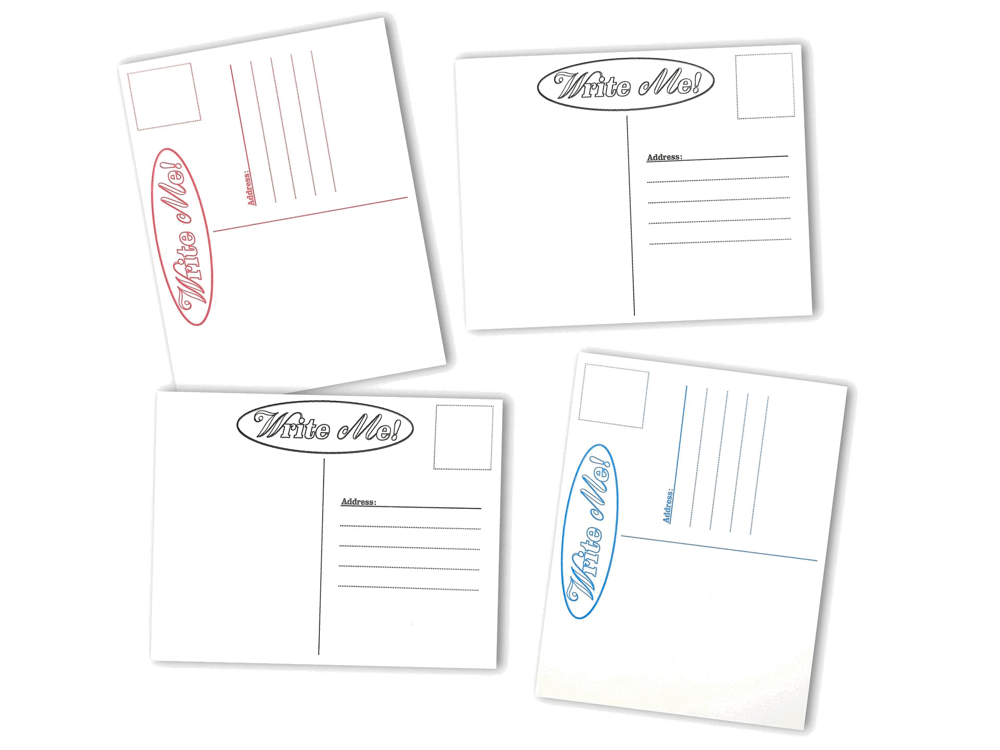
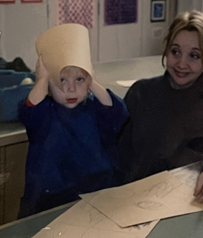
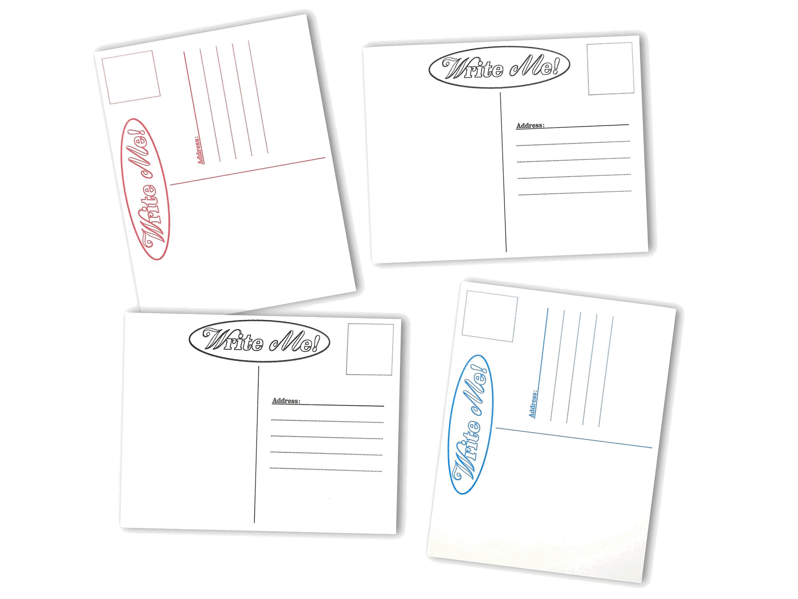
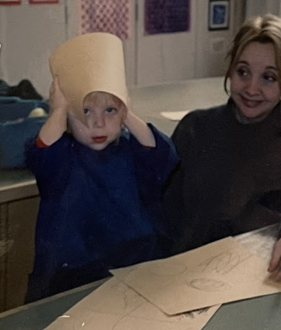

Call Me! explores these questions as they relate to the objects in our lives, why we have them, and why we hold onto them. It explores the roles of access and sentimental value in forming relationships with our objects, all through the lens of my own.
Call Me! is structured in such a way that as it goes on, sentimental value (for me) increases. I find my attachment to each one of my collected items is less than that which I have for items tied to specific memories, even if they are not “collectible items”. Even if they are meant to be thrown away almost immediately. At the start of the book, the reader is presented with these “collectible items” in the purest sense of the phrase. At the end of the book, they are presented with “collected items”.
The first chapter presents the specific practice of match collecting, using imagery of my parents’ collection of matchbooks and boxes spanning decades.
The second chapter is based on freebies of all sorts– from promotional ones to “stooped” items scouted on the streets of New York City– giving a window into their psychology as well. The imagery consists of my personal collection of various freebies.
The third and final chapter is about “sentimental clutter”, or what I refer to as “immortalized” items that have profound meaning that may or may not exceed the overall “value” of the object itself. The chapter is based in my collection of such items, exploring others’ experience of this phenomena through the lens of social media.
 



Rae Johnsen is a graphic design and film student based in Brooklyn, NY. This project was conceptualized and executed between October and December of 2024.
Her Instagrams are @thingsraemade and @raemjohnsen.